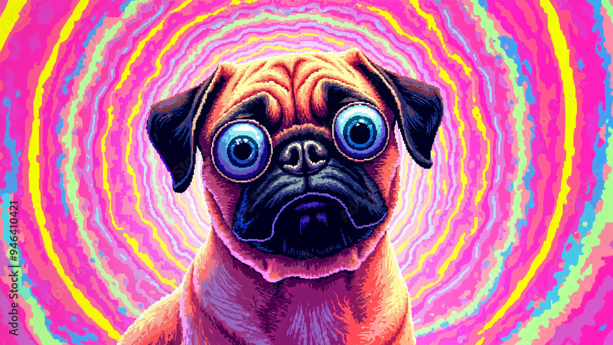

Les effets psychédéliques
- Hallucinations visuelles et auditives : modifications des couleurs, des formes, des motifs géométriques, ou une distorsion de la perception de la réalité.
- Altération de la perception du temps : le temps peut sembler s’écouler plus lentement ou plus rapidement.
- Modifications de l’humeur : euphorie, confusion, anxiété, ou parfois des états mystiques ou introspectifs.
- Distorsion de la réalité : les utilisateurs peuvent sentir qu’ils se détachent de leur environnement ou de leur corps.
- Pensée altérée : pensée circulaire, introspection profonde, ou l'impression de connexions mentales inhabituelles.